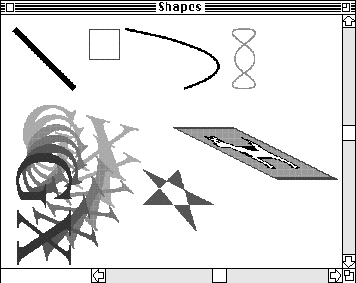
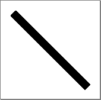
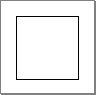
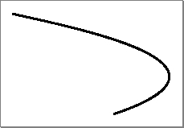
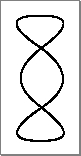
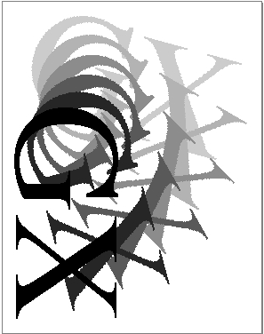
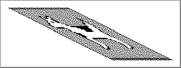

Analyzing the Data Streams of Flattened Shapes
This section first uses sample code to generate a picture with seven shapes. Each of the seven shapes is then flattened using the procedure described in the section "Flattening Shapes With GraphicsBug" beginning on page 7-54. The section "Analyzing the Data Streams of Flattened Shapes" beginning on page 7-56 describes how to use GraphicsBug to interpret the data for each of the seven shapes. The GraphicsBug data stream output is provided for each flattened shape in Listing 7-4 through Listing 7-10. The byte-by-byte analysis of the data stream for each flattened shape is provided in Table 7-14 through Table 7-20.Creating a Picture With Seven Shapes
Listing 7-3 creates seven primitive shapes and adds them to a window's page shape to form the picture shown in Figure 7-12. This picture contains (from left to right and top to bottom) a line, rectangle, curve, path, text, polygon and bitmap shape.Listing 7-3 A picture with seven shapes
void CreateSampleImage(WindowPtr wind) { gxShape thePage; gxShape theLine; line lineData = {ff(25), ff(25), ff(125), ff(125)}; gxShape theRect; gxRectangle rectData = {ff(25), ff(25), ff(75), ff(75)}; gxShape theCurve; gxCurve curveData = {ff(25), ff(25), ff(275), ff(75), ff(125), ff(125)}; gxShape thePath; long tripleEightData[] = {1/* # of contours */, 6 /* # of points */, 0xff000000, 0, 0, ff(75), 0, ff(5), ff(50), ff(75), ff(100), 0, ff(100), ff(75), ff(50)}; gxShape theText; gxRectangle theTextBounds; gxColor textColor; fixed x,y; short loop; gxShape thePolygon; long starData[] = {1, /* number of contours */ 5, /* number of points */ ff(60), 0, ff(90), ff(90), ff(0), ff(30), ff(120), ff(30), ff(0), ff(90)}; /* the points */ gxShape theBitmap; /* retrieve the page shape so we can add to it */ thePage = GetDocShape(wind); /* Create a line shape*/ theLine = GXNewLine (&lineData); GXSetShapePen(theLine, ff(9)); GXAddToShape(thePage, theLine); GXDisposeShape(theLine); /* create a rectangle; the color of the rectangle is red */ theRect = GXNewRectangle(&rectData); {gxColor redColor = {gxRGBSpace, nil,{ 0xFFFF,0,0}}; GXSetShapeColor(theRect, &redColor); } GXSetShapeFill (theRect, closedFrameFill); GXMoveShapeTo (theRect, ff(150), ff(25)); GXAddToShape(thePage, theRect); GXDisposeShape(theRect); /* create a curve shape; the shape has a pen thickness of 3.25 */ theCurve = GXNewCurve(&curveData); GXSetShapePen(theCurve, fl(3.25)); GXMoveShapeTo (theCurve, ff(210), ff(25)); GXAddToShape(thePage, theCurve); GXDisposeShape(theCurve); /* create a path shape; the shape's color is green and the pen thickness is 2 */ thePath = GXNewPaths((paths *) tripleEightData); GXSetShapeFill (thePath, closedFrameFill); GXSetShapePen(thePath, ff(2)); GXSetShapeCommonColor (thePath, green); GXMoveShapeTo (thePath, ff(390), ff(25)); GXAddToShape(thePage, thePath); GXDisposeShape(thePath); /* create a text shape; the shape is the characters GX colored in hsv space and rotated 90 degrees */ /* create the text, set the font size, and set the font name */ theText = NewText(2,(unsigned char*)"GX", nil); GXSetShapeCommonFont(theText, timesFont); GXSetShapeTextSize(theText, ff(135)); GXMoveShapeTo (theText, ff(25), ff(230)); GXSetShapeAttributes (theText, gxMapTransformShape); /* create an hsv color space and set up the initial colors */ textColor.space = hsvSpace; textColor.profile = nil; textColor.element.hsv.hue = 0x7400; textColor.element.hsv.saturation = 0xFFFF; textColor.element.hsv.value = 0xFFFF; /* get the bounds of "theText" and determine the coordinates of the bottom left corner */ GXGetShapeBounds(theText, 0L, &theTextBounds); x = theTextBounds.left; y = theTextBounds.bottom; /* rotate "theText"; add each letter to the picture */ for (loop = 0; loop < 6; loop++) { GXSetShapeColor(theText, &textColor); GXRotateShape(theText, ff(90), x, y); GXAddToShape(thePage, theText); textColor.element.hsv.hue += 0x0940; } GXDisposeShape(theText); /* create a polygon shape; the shape's color is yellow, the pen size is 3, and it is skewed in the vertical direction by a factor of 0.5 */ thePolygon = GXNewPolygons((gxPolygons *) starData); GXSetShapeFill(thePolygon, gxEvenOddFill); GXSetShapePen (thePolygon, ff(3)); GXSetShapeCommonColor (thePolygon, yellow); GXMoveShapeTo (thePolygon, ff(240), ff(110)); GXSkewShape(thePolygon, 0, fl(0.5), 0, 0); GXAddToShape(thePage, thePolygon); GXDisposeShape(thePolygon); /* create a bitmap by retrieving a bitmap from the resource fork and skewing it in the horizontal direction by a factor of .*/ theBitmap = GXGetPixMapShape(128); GXValidateShape (theBitmap); GXSkewShape(theBitmap, ff(2), 0, 0, 0); GXMoveShapeTo (theBitmap, ff(290), ff(190)); GXAddToShape(thePage, theBitmap); GXDisposeShape(theBitmap);Figure 7-12 A picture with seven shapes
Analyzing a Flattened Line Shape
The function described in the section "Creating a Picture With Seven Shapes" beginning on page 7-56 was first used to draw the picture shown in Figure 7-12 containing the line shape shown in Figure 7-13.The line shape is created with a pen size of 9 and a default color of black. The pen is moved from the point (25.0, 25.0) to point (125.0, 125.0).
Figure 7-13 The line shape drawn

The procedure described in the section "Flattening Shapes With GraphicsBug" beginning on page 7-54 was then used to generate the GraphicsBug output shown in Listing 7-4. The first line of the output shows the use of the
flcommand on the memory address that contained the line shape. The flattened line shape data stream is the sequential byte data that appears in parentheses. For example, the first four bytes of the data stream in Listing 7-4 are (06) (80) (01 03). All other annotation is provided by GraphicsBug.Since the flattened line shape is the first shape in the data stream, this first part of the GraphicsBug output shows the data stream header. The GraphicsBug output for the other flattened shapes described in this section correspond to the data stream that describes that specific shape. These shape-specific sections are presented in QuickDraw GX drawing order.
Listing 7-4 GraphicsBug analysis of a flattened line
fl 0c79090 owners 1) newObject; size: #2 (03) headerType; byte compression (80) version == 1.0; flags == fontListFlatten | fontGlyphsFlatten (01 03) newObject; size: #6 (07) [1] fontNameType; no compression (2f) (04 02 01 01 00 00) newObject; size: #0 (01) [1] styleType; no compression (28) setData; size: #1 (42) stylePen; byte compression (83) (09) newObject; size: #0 (01) [1] inkType; no compression (29) newObject; size: #0 (01) [1] transformType; no compression (2a) newObject; size: #4 (05) lineType; byte compression (83) (19 19 7d 7d) newObject; size: #0 (01) trailerType; no compression (3f)Table 7-14 shows the data stream analysis of the flattened line shape. The stream data is obtained from the GraphicsBug output in Listing 7-4. This table provides a description of each byte of the data stream for this shapeAnalyzing a Flattened Rectangle Shape
The function described in section "Creating a Picture With Seven Shapes" beginning on page 7-56 was first used to draw the picture shown in Figure 7-12 containing the rectangle shape shown in Figure 7-14.The red rectangle shape is created with its frame. The size and shape of the rectangle is defined by its upper-left boundary point (25.0, 25.0) and its lower-right boundary point (75.0, 75.0). The fill type is closed-frame. Once the rectangle is drawn, it is moved to the point (150.0, 25.0) to position it in the picture.
Figure 7-14 The rectangle shape drawn

The procedure described in the section "Flattening Shapes With GraphicsBug" beginning on page 7-54 was then used to generate the GraphicsBug output shown in Listing 7-5. The flattened rectangle shape data stream is the sequential data that appears in parentheses.
Listing 7-5 GraphicsBug analysis of a flattened rectangle shape
inkType; no compression (29) space gxRGBSpace profile nil value(s) 1.0000 (ffff) 0.0000 0x0000 0.0000 0x0000 setData; size: #4 (45) inkColor; no compression (02) (fe ff 00 00) newObject; size: #8 (09) rectangleType; word compression (45) (00 96 00 19 00 c8 00 4b) setData; size: #1 (42) shapeFill; byte compression (82) (02)Table 7-15 shows the data stream analysis of the flattened rectangle shape. The stream data is obtained from the GraphicsBug output in Listing 7-5. This table provides a description of each byte of the data stream for this shape. Data format sequences that are identical to previously described data sequences in the stream are not shown..Analyzing a Flattened Curve Shape
The function described in the section "Creating a Picture With Seven Shapes" beginning on page 7-56 was first used to draw the picture shown in Figure 7-12 containing the curve shape shown in Figure 7-15.The curve has a pen thickness of 3.25. The size and shape of the curve are defined by its first point (210.0), control point (460.0, 75.0), and last point (310.0, 125.0). Once the curve is drawn, it is moved to the point (210.0, 25.0) to position it in the picture.
Figure 7-15 The curve shape drawn

The procedure described in the section "Flattening Shapes With GraphicsBug" beginning on page 7-54 was then used to generate the GraphicsBug output shown in Listing 7-6. The flattened curve shape data stream is the sequential data that appears in parentheses.
Listing 7-6 GraphicsBug analysis of a flattened curve shape
. . . newObject; size: #6 (07) [1] fontNameType; no compression (2f) (04 02 01 01 00 00) newObject; size: #0 (01) [1] styleType; no compression (28) setData; size: #4 (45) stylePen; no compression (03) (00 03 40 00) . . . newObject; size: #12 (0d) curveType; word compression (44) (00 d2 00 19 01 cc 00 4b 01 36 00 7d) newObject; size: #0 (01) trailerType; no compression (3f)Table 7-16 shows the data stream analysis of the flattened rectangle shape. The stream data is obtained from the GraphicsBug output in Listing 7-6. This table provides a description of each byte of the data stream for this shape. Data format sequences that are identical to previously described data sequences in the stream are not shown and are not analyzed here.Analyzing a Flattened Path Shape
The function described in the section "Creating a Picture With Seven Shapes" beginning on page 7-56 was first used to draw the picture shown in Figure 7-12 containing the path shape shown in Figure 7-16.A path is created with a pen thickness of 2.0 and a color of green. The size and shape of the curve are defined by the points (0.0, 0.0), (75.0, 0.0), (5.0, 50.0), (75.0, 100.0), (0.0, 100.0), and (75.0, 50.0). Once the path is drawn, it is moved to the point (290.0, 25.0) to position it in the picture. The line is not on any of the points.
Figure 7-16 The path shape drawn

The procedure described in the section "Flattening Shapes With GraphicsBug" beginning on page 7-54 was then used to generate the GraphicsBug output shown in Listing 7-7. The flattened path shape data stream is the sequential data that appears in parentheses.
Listing 7-7 GraphicsBug analysis of a flattened path shape
newObject; size: #0 (01) [1] transformType; no compression (2a) newObject; size: #19 (14) pathType; byte compression (87) (01 06 ff 2a 01 73 40 00 19 b5 00 46 ce ba ce 4b 00 b5 32) setData; size: #1 (42) shapeFill; byte compression (82) (02)Table 7-17 shows the data stream analysis of the flattened path shape. The stream data is obtained from the GraphicsBug output in Listing 7-7. This table provides a description of each byte of the data stream for this shape. Data format sequences that are identical to previously described data sequences in the stream are not shown and are not analyzed here.Analyzing a Flattened Text Shape
The function described in the section "Creating a Picture With Seven Shapes" beginning on page 7-56 was first used to draw the picture shown in Figure 7-12 containing the path shape shown in Figure 7-17.A text shape with glyphs G and X is colored in hsv space. The glyphs are rotated six times by 90 degrees about the left bottom corner. Once the text is drawn, it is moved to the point (25.0, 230.0) to position it in the picture.
Figure 7-17 The text shape drawn

The procedure described in the section "Flattening Shapes With GraphicsBug" beginning on page 7-54 was then used to generate the GraphicsBug output shown in Listing 7-8. The flattened text shape data stream is the sequential data that appears in parentheses.
Listing 7-8 GraphicsBug analysis of a flattened text shape
newObject; size: #32 (21) [1] fontNameType; no compression (2f) (04 02 01 01 00 1a) Apple Computer Times Roman (41 70 70 6c 65 20 43 6f 6d 70 75 74 65 72 20 54 69 6d 65 73 20 52 6f 6d 61 6e) newObject; size: #0 (01) [1] styleType; no compression (28) setData; size: #1 (42) styleFont; byte compression (8a) (01) setData; size: #2 (43) styleTextSize; word compression (49) (00 87) newObject; size: #0 (01) [1] inkType; no compression (29) space hsvSpace profile nil value(s) 0.4531 0x7400 1.0000 (ffff) 1.0000 (ffff) setData; size: #6 (47) inkColor; no compression (02) (b6 03 74 00 ff ff) newObject; size: #0 (01) [1] transformType; no compression (2a) setData; size: #24 (59) transformMapping; no compression (03) (00 3d 02 12 00 00 98 fe 00 00 f7 47 00 00 f7 47 00 00 42 42 ff ff bd be) newObject; size: #8 (09) textType; no compression (09) byteLength 2 position { 25.0000, 230.0000} Displaying memory from 00c7a116 00c7a116 4758 GX (a4) bytes (02) position.x (19) position.y (00 e6 02 47 58) setData; size: #1 (42) shapeAttributes; byte compression (80) (20)Table 7-18 shows the data stream analysis of the flattened rectangle shape. The stream data is obtained from the GraphicsBug output in Listing 7-8. This table provides a description of each byte of the data stream for this shape. Data format sequences that are identical to previously described data sequences in the stream are not shown and are not analyzed here.Analyzing a Flattened Polygon Shape
The function described in the section "Creating a Picture With Seven Shapes" beginning on page 7-56 was first used to draw the picture shown in Figure 7-12 containing the polygon shape shown in Figure 7-18.The yellow polygon shape is drawn with a pen thickness of 3.0 and skewed in the vertical direction by 0.5. Its size and shape is controlled by the vectors defined by the points (60.0, 0.0), (90.0, 90.0), (0.0, 30.0), (120.0, 30.0), (0.0, 90.0). The fill is even-odd. Once the polygon is drawn, it is moved to the point (240.0, 110.0) to position it in the picture.
Figure 7-18 The polygon shape drawn
The procedure described in the section "Flattening Shapes With GraphicsBug" beginning on page 7-54 was then used to generate the GraphicsBug output shown in Listing 7-9. The flattened polygon shape data stream is the sequential data that appears in parentheses.
Listing 7-9 GraphicsBug analysis of a flattened polygon shape
polygonType; byte compression (86) (01 05 5a 01 2c 01 04 e2 97 5a 69 88 c4 78 00)Table 7-19 shows the data stream analysis of the flattened polygon shape. The stream data is obtained from the GraphicsBug output in Listing 7-9. This table provides a description of each byte of the data stream for this shape. Data format sequences that are identical to previously described data sequences in the stream are not shown and are not analyzed hereAnalyzing a Flattened Bitmap Shape
The function described in the section "Creating a Picture With Seven Shapes" beginning on page 7-56 was first used to draw the picture shown in Figure 7-12 containing the polygon shape shown in Figure 7-19.The bitmap was retrieved from the resource fork and skewed in the horizontal direction by a factor of 2.0. Once the bitmap is drawn, it is moved to the point (200.0, 190.0) to position it in the picture.
Figure 7-19 The bitmap shape drawn

The procedure described in the section "Flattening Shapes With GraphicsBug" beginning on page 7-54 was then used to generate the GraphicsBug output shown in Listing 7-10. The flattened bitmap shape data stream is the sequential data that appears in parentheses.
Listing 7-10 GraphicsBug analysis of a flattened bitmap shape
newObject; size: #0 (01) [1] transformType; no compression (2a) setData; size: #12 (4d) transformMapping; word compression (43) (01 22 00 be 00 01 00 01 00 00 00 02) newObject; size: #403 (00 00 01 94) [1] bitImage; no compression (2e) (a8 34 58 73 11 01 01 c2 81 70 22 01 21 82 ca ... ) newObject; size: #49 (32) [1] colorSetType; byte compression (ac) (01 ff ff ff ff 00 00 33 ff 00 33 cc 00 00 ...) newObject; size: #10 (0b) bitmapType; no compression (08) (aa) image (01) width (66) height (58) rowBytes (34 ab) pixelSize (04) space (0b) set (01 f0)Table 7-20 shows the data stream analysis of the flattened bitmap shape. The stream data is obtained from the GraphicsBug output in Listing 7-10. This table provides a description of each byte of the data stream for this shape. Data format sequences that are identical to previously described data sequences in the stream are not shown and are not analyzed here.
Table 7-20 Analysis of the data stream of a bitmap shape Values in data stream
(binary)Type of information Value Description New transform object Bytes 0x01 and 0x2A define the new transform object. This data sequence is identical to the previous line shape example. Set data for mapping of the transform object 0x4D
(01 001101)Operation opcode Record size
1 13
Set data Record size is 13 bytes. The transform data size is13 - 1 (data type opcode byte) = 12 bytes. Since each mapping requires 8 bytes, there are 12/2 =6 mappings. This indicates that there is a translate, scale, and skew mapping.
0x43
(01 000011)Compression type opcode Data type opcode
1 3
Word compression
gxTransformMappingconstant of thegxTransformDataOpcodeenumeration0x0122Data 290.0 The deltaXparameter for theGXSetTransformMappingfunction is 290.0.0x00BEData 190.0 The deltaY parameter for theGXSetTransformMappingfunction is 190.0.0x0001Data 1.0 The hScaleparameter for theGXSetTransformMappingfunction is 1.0.0x0001Data 1.0 The vScaleparameter for theGXSetTransformMappingfunction is 1.0.0x0000Data 0.0 The hSkewparameter for theGXSetTransformMappingfunction is 0.0.0x0002Data 2.0 The vSkewparameter for theGXSetTransformMappingfunction is 2.0.New bitmap image 0x00
(00 000000)Operation opcode Record size
0 0
New object Record size is > 64 bytes.
0x00Record size (continued) 0 Record size is > 256 bytes. 0x01 94Record size (continued) 404 Record size is 404 bytes. For additional information about the stream format for the record size, see the section "Record Size" beginning on page 7-11. 0x2E
(00 101110)Compression type opcode Data type opcode
0 0x2E
No compression
gxBitImageOpcodeconstant of thegxGraphicsNewOpcodeenumeration0xA8
(10 10 1 000)Omit byte - The gxOmitBitImageMaskandgxOmitBitImageShiftenumerations are used to interpret this omit byte. Data1,width, is byte compressed. Data2,height, is byte compressed. Data3, indicates that the bit image data is compressed. The last3 bits are not used and are reserved.0x34Data1 52 The bit image row width is 52 bytes. 0x58Data2 88 The bit image column height is 88 bytes. Row 1 of the bit image follows 0x73
(01 110011)Bit image compression byte 1
51Bits 6 and 7 are 1. This is the gxRepeatBitImageBytesOpcodeconstant of thegxBitImageCompressionenumeration.
The bits that follow are to be repeated 51 times.0x11Data 11 The bits "11" are to be repeated 51 times 0x01
(00 000001)Data 0
1This is the gxCopyBitImageBytesOpcodeconstant of thegxBitImageCompressionenumeration. The bits in the next byte are added to the first row x number of times.The value of x is 1.
0x01Data "01" The bits "01" are added to row 1 Rows 2 through 11 of the bit image follow 0xC2
(11 000010)Bit image compression byte
Previous row repeat number
3
2
This is the gxRepeatBitImageScanOpcodeconstant of thegxBitImageCompressionenumeration. The previous scan line is repeated x times.The value of x is 2. The first row of bits is repeated 2 times.
Row 12 0x81
(10 000001)Bit image compression byte 2
1
This is the gxLookupBitImageBytesOpcodeconstant of thegxBitImageCompressionenumeration. Repeat x bytes from the previous row and add them to the current row.The value of x is 1. One byte of data is to be repeated from the previous scan line.
0x70
01 110000Bit image compression byte 1
48Bits 6 and 7 are 1. This is the gxRepeatBitImageBytesOpcodeconstant of thegxBitImageCompressionenumeration.
The bits in the byte that follow are to be repeated 48 times.0x22Data "100010" The bits "100010" are to be repeated 48 times 0x01
(00 000001)Bit image compression byte 0
1
This is the gxCopyBitImageBytesOpcodeconstant of thegxBitImageCompressionenumeration. Repeat x bytes from the previous row and add them to the current row.The value of x is 1. One byte of data is to be repeated from the previous scan line.
0x21Data "100001" The bits "100001" are to be repeated 1 time on the second row. 0x82
(10 000010)Bit image compression byte 2
2
This is the gxLookupBitImageBytesOpcodeconstant of thegxBitImageCompressionenumeration. Repeat x bytes from the previous row and add them to the current row.The value of x is 2. Two bytes of data is to be repeated from the previous scan line.
0xCA
(11 001010)Bit image compression byte 3
10
This is the gxRepeatBitImageScanOpcodeconstant of thegxBitImageCompressionenumeration. The previous scan line is repeated x times.The value of x is 10. The first row of bits is repeated 10 times.
The remaining bytes of the bit image are not shown here. New color set object 0x32
(00 110010)Operation opcode Record size
0 50
New object Record size is 50 bytes.
0xAC
(10 101100)Compression type opcode Data type opcode
2 3
Byte compression
gxColorSetTypeOpcodeconstant of thegxGraphicsNewOpcodeenumeration0x01Data 1
gxRGBSpaceconstant of thegxColorSpacesenumerationWhite color for the bitmap object 0xFFData 0xFFFF Since color components are 2-byte values, the byte is replicated to the value 0xFFFF or 65,535. The RGB value for the redfield of thegxRgbColorstructure is 65,535.0xFFData 0xFFFF Since color components are 2-byte values, the byte is replicated to the value 0xFFFF or 65,535. The RGB value for the greenfield of thegxRgbColorstructure is 65,535.0xFFData 0xFFFF Since color components are 2-byte values, the byte is replicated to the value 0xFFFF or 65,535. The RGB value for the bluefield of thegxRgbColorstructure is 65,535.Dark blue color for the bitmap object 0x00Data 0x0000 Since color components are 2-byte values, the byte is replicated to the value 0x0000 or 0. The RGB value for the redfield of thegxRgbColorstructure is 0.0x00Data 0x0000 Since color components are 2-byte values, the byte is replicated to the value 0x0000 or 0. The RGB value for the greenfield of thegxRgbColorstructure is 0.0x33Data 0x0000 Since color components are 2-byte values, the byte is replicated to the value 0x3333 or 0. The RGB value for the bluefield of thegxRgbColorstructure is 0x3333.Cherry red color for the bitmap object 0xFFData 0xFFFF Since color components are 2-byte values, the byte is replicated to the value 0xFFFF or 65,535. The RGB value for the redfield of thegxRgbColorstructure is 65,535.
0x00Data 0x0000 Since color components are 2-byte values, the byte is replicated to the value 0x0000 or 0. The RGB value for the greenfield of thegxRgbColorstructure is 0.0x33Data 0x3333 Since color components are 2-byte values, the byte is replicated to the value 0x3333. The RGB value for the bluefield of thegxRgbColorstructure is 0x3333.Dull red color for the bitmap object 0xCCData 0xCCCC Since color components are 2-byte values, the byte is replicated to the value 0xCCCC or 52,428. The RGB value for the redfield of thegxRgbColorstructure is 52,428.0x00Data 0x0000 Since color components are 2-byte values, the byte is replicated to the value 0x0000 or 0. The RGB value for the greenfield of thegxRgbColorstructure is 0.0x00Data 0x0000 Since color components are 2-byte values, the byte is replicated to the value 0x0000 or 0. The RGB value for the bluefield of thegxRgbColorstructure is 0x0000.The remaining 35 bytes of the color set are not shown here. New shape object 0x10
(00 010000)Operation opcode Record size
0 11
New object Record size is 11 bytes.
0x08
(00 001000)Compression type opcode Data type opcode
0 8
Byte compression
gxBitmapTypeconstant of thegxShapeTypesenumeration0xAA
(10 10 10 10)Omit byte - The gxOmitBitmapMask1andgxOmitBitmapShift1enumerations are used to interpret this byte. Byte compression is used for data1, data2, data3, and data4.0x01Data1 1 A pointer to the pixels located at 1. 0x66Data2 102 The row width is 102 pixels. 0x58Data3 88 The column height is 88 pixels. 0x34Data4 52 The row width is 52 bytes. 0xAB
(10 10 10 11)Omit byte - The gxOmitBitmapMask2andgxOmitBitmapShift2enumerations are used to interpret this byte. Byte compression is used for data1, data2, and data3. Data4 is omitted.0x04Data1 4 The number of bits per pixel is 1. 0x0BData2 11 gxIndexedSpaceconstant of thegxColorSpacesenumeration0x01Data3 1 The first set of bitmaps is used. 0xF0
(11 11 00
00)Omit byte - The gxOmitBitmapMask3andgxOmitBitmapShift3enumerations are used to interpret this byte. Data1 and data2 are omitted. These are the x and y positions of the bitmap. The position is therefore at point (0, 0). The other bits are reserved.